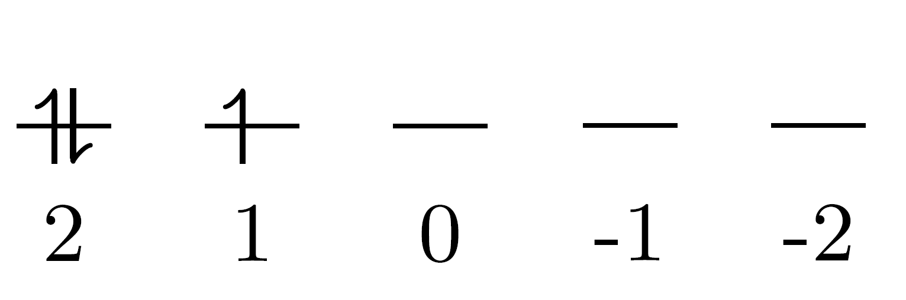
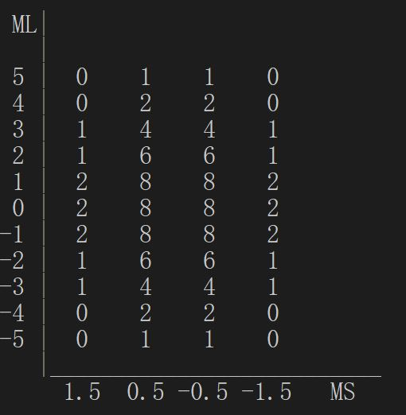

Update(2017/10/6):该程序终于实现了直接输出光谱项的功能，因此将文章的标题和链接都修改为「求解电子光谱项的程序」。
求原子光谱项有很多种方法，这里只介绍一种思路简单粗暴的方法。某种程度上可称为是逐一枚举的方法。（等你看完说不定会觉得这个方法很low23333）
其实该方法也可看作是结构化学教科书上讲解两个同科电子组态（$ (n\text{p})^2 $）的光谱项的方法的推广。
表格法求光谱项的原理
为什么某一组态的能级会发生分裂呢？这是因为该组态是简并的（没有某些扰动的理想条件下），而当考虑了扰动后，原本简并的微观能级不再简并而发生分裂。
我们知道，对于多电子原子中的任意一个电子，其状态可由其单电子原子轨道（波函数）近似描述，其中单电子波函数含有四个量子数。也就是说只要确定了这四个量子数，便能够确定其状态。而组态只能确定电子的主量子数$n$和角量子数$l$，并没有进一步描述电子的磁量子数$m$和自旋磁量子数$m_s$。
组态的能级分裂就是因为电子的磁量子数和自旋磁量子数的不同，虽然对于多电子原子来说使用总角量子数$L$、总自旋量子数$S$和总量子数$J$的概念会更合适。
所以该方法的第一步是确定某一组态的所有微观能态。
以$\text{d}^3$组态为例。我们首先要考虑其所有的电子排布方式。由于Pauli原理的限制，电子的状态没有完全相同的。d轨道有10个对应的自旋轨道，所以总的微观状态数为$\left( \begin{smallmatrix} 10 \\ 3 \end{smallmatrix} \right)=120$。
以图所示的状态为例，三个电子的磁量子数分别为2、2、1，所以$M_L=5$。而总自旋磁量子数$M_S=1/2$。

也就是我们要计算一共120种微观能态的$M_L$和$M_S$。如果手算的话，显然这是一个很麻烦的事情。
当我们将120种组合的$M_L$和$M_S$都算出来后，就可绘制出$M_L$-$M_S$表格。
以总自旋磁量子数为例，三个电子共有四种情况。电子的自旋全部相同以及其中一个电子与另外两个的自旋不同。所以$M_S=3/2, 1/2, -1/2, -3/2$。
相应地，$M_L=5, 4, 3,\ldots,-4, -5$。我们将各个组合中具有相同$M_L$、$M_S$分别计数，便可得到该表。

然后只需要一步步从表中提取出光谱项即可。
从最大的$M_L=5$开始看。$M_L$为$L$的最大值，$L$的取值范围为$0, 1,\ldots,\pm L$。而且对应的$S(M_S)=1/2, -1/2$。由此我们可推断出该组态有一$^2\text{H}$的光谱项。
然后我们将表格中二三列的数字均减去1，将该光谱项移除，得到第二步的表。
下图左边的是第二步得到的表，此时$L=3\ldots-3$，而$S=3/2, 1/2, -1/2, -3/2$。所以可提取出光谱项$^4\text{F}$。
最后得到的$\text{d}^3$组态的所有的光谱项为：$^2\text{H},\ ^2\text{G},\ ^4\text{F},\ ^2\text{F},\ ^2\text{D}(2),\ ^4\text{P},\ ^2\text{P}$
以上方法适用于任何同科电子组态光谱项的求算。而对于存在不同角量子数电子的组态（例如$\text{p}^2\text{d}^2$），只需要先分别求得p轨道的电子以及d轨道的电子的组合，再将不同角量子数的组合再一次组合即可。以$\text{p}^2\text{d}^2$组态为例，此时总的微观状态数为$\left( \begin{smallmatrix} 6 \\ 2 \end{smallmatrix} \right)\times\left( \begin{smallmatrix} 10 \\ 2 \end{smallmatrix} \right)=15\times 45=675$。这一方法说不上很高效，但思路很简单。之后生成表格的步骤则是完全一样的。
代码的思路
我是用Fortran写的这个程序。下面主要介绍代码的思路。
代码运行示例：
我目前是实现了d轨道任意个同科电子组态的光谱项的辅助程序。不过将其推广至p、f、g轨道的难度都不大，就不细讲了。
d轨道共有10个自旋轨道，所以声明了两个含有10个元素的数组分别储存各自旋轨道的磁量子数和自旋磁量子数。
电子数是由用户输入的，然后依次列举所有的自旋轨道的组合并计算$M_L$和$M_S$并分别储存在两个数组中。这里需要注意，由于电子数并非事先写在程序中，所以列举组合的部分无法直接使用嵌套的循环来做到。这里使用的是一个利用递归的子程序来实现的。
然后统计$M_L$和$M_S$的取值各有多少种，并生成两个数组分别储存这些值（按由大到小的顺序依次储存）。
例如：120种组合的$M_L$依次为(5, 3, 2, 3, -1, 5, 4, -2,…)，而之后的那个数组为(5, 4, 3, 2,…,-4, -5)这11个值。
我们将前一个数组中的120个值与后一个数组进行比较，记录各个值出现的次数，便能够生成表中的数据。
Update(2017/8/30):将程序功能拓展了，现在可以处理不同角量子数的电子组态，如$({\rm s})^1({\rm p})^2({\rm d})^2$这样的组态。但无法处理如$(2{\rm p})^2(3{\rm p})^2$这一类的组态。
运行示例：
关于直接输出光谱项的功能的实现
由于直接对输出的表格进行操作很麻烦，而且也不必要（因为对整个表格操作需要的循环实现困难，而且表无论是行还是列都是对称的）。所以为了实现该功能，我首先取原有的表格的左上部分单独存为一个如图所示的二维数组。
之后检查第一行各列的数字$n$，若为零，则跳过；若非零，则根据其对应的总角量子数$L$和总自旋角量子数$S$得到其光谱项（若不为1，输出的光谱项后会有类似 <n> 的标记，表明该光谱项的数目为$n$），之后的各行与各列都减去$n$。一行结束后，进入下一行，重复以上的步骤。（没看明白的话，可以按照第一节的例子跟着手算一下）
最终得到的结果是
进一步改进
（很开心，这里提及的功能都已基本实现。当然以后依然会对代码进行完善。）
这里倒不是指代码的优化。目前希望是拓展该程序的功能，使之能够处理任意组态，并生成相应的表。
由于快到了回学校的时间，我把写代码的事暂时停下了，该功能要搁置一段时间才能完成。
至于为什么不直接输出所有的光谱项，很简单，我还没想出来怎么实现……
所以目前这都只能算是一个求光谱项的辅助程序。不过我还是挺高兴能写出这么一个玩意的。
最终版本
Update(2019/7/16): 最终版本之再也不改了
进一步学习了Fortran的指针和面向对象编程后，实现了多个相同壳层作为输入的功能。并且把原来的代码几乎重写了一遍。我用gfortran 8编译通过，在gfortran 7上应该也能编译（Intel Visual Fortran肯定也没问题）。代码可以在GitHub下载到，没有提供可执行文件（因为之前编译的程序在我现在的电脑上都运行不了，没有安装IVF）。当然如果你不想自己编译的话，我还是可以提供编译好的程序。
以下是运行的例子。
参考文献
- Journal of Chemical Education, 52(2), 1975:87-89
- 大学化学, 29(2), 2014:44-46